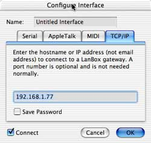

LCedit+ v3.3 tutorial, chapter 1: Connecting to a LanBox DMX controller
| |
LCedit+ v3.3 tutorial, chapter 1: Connecting to a LanBox DMX controller |
|
|
| Welcome
With the LanBox-LC system you've bought a modern desktop DMX controller that can compete with the best. We hope you will enjoy working with your LanBox. What is in this manual? Note: The LCedit+ was designed for the Macintosh platform (including OS X, as picture shows), but we also have a Windows 2000/XP version. What is LCedit+? LCedit+ is a computer program for editing the light cues, sequences and shows inside the LanBox. In other words, LCedit+ is just a friendly way to program the LanBox, all the "real" lighting work is done by the box. The program has several types of windows: Stage (that holds the fixtures and light groups), Cast (lists all used fixtures and groups as a list), Control (for light-, and layer- sequencer control, setting layer and chaser parameters ), Cuelist editor (for creating & editing of cues, including paths and patterns), and Monitor (to monitor various in/out values) . System requirements Mac PC Setup and Install Before you can use LCedit+ the LanBox needs to be setup for a certain hardware configuration, for instructions see the LanBox-LC v2 manual for the LC or the LanBox user manual for the LanBox-LCM, LCE and LCX. Upgrading from LanBox-LC II to LanBox-LC+, so LCX, LCE and LCM users, skip this paragraph!
The Configure Interface window After starting LCedit+ and opening a New project, this is the first window you will see. The editor needs to know what kind of interface you want to use, in order to communicate with a LanBox. Note: On OS X or Windows, only serial ports or TCP/IP can be used. Note: If you want to connect via TCP/IP (LanBox-LCX, LCE), the default IP is 192.168.1.77 (mask is 255.255.255.0) so your computer should be set to any other IP in the 192.168.1.xx range. Select the medium, port(s) or name, for AppleTalk and TCP/IP you can optionally save your password. Now give it a descriptive name , select the "Connect" checkbox and click "OK". The settings will be stored in your project file, in order to connect instantly when you double click the saved project file. Note: If you wish to try LCedit+ without a LanBox, you can try to use our demo LanBox (if it is not in use) via the Internet. In that case you need to select TCP/IP and use the name demo.lanbox.com, with password 777. (you need to have access to the Internet in order to use our demo box). After clicking OK, LCedit+ will try to establish a connection with your LanBox. On a network connection it will ask for a password, use 777 as it is the default password of a LanBox. If everything goes well, you will see a green square in the bottom right half of the control window.
TIP: Subscribe to the LanBox-Talk e-mail discussion list, see our lists page. |
|
|
|
| Last updated: 20-04-2005 by: Fokko |
Copyright 1995..2005 CDS advanced technology bv. LanBox is a registered trademark of CDS advanced technology bv. All other names referenced are the service marks, trademarks or registered trademarks of their respective companies. Comments, suggestions, questions and info: www.lanbox.com |
|
|
|